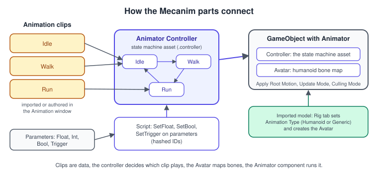
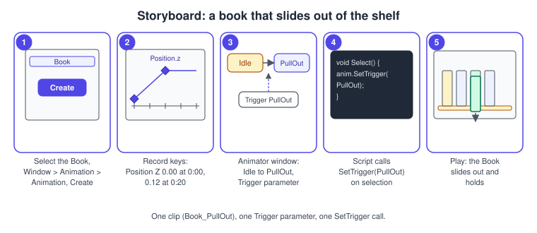
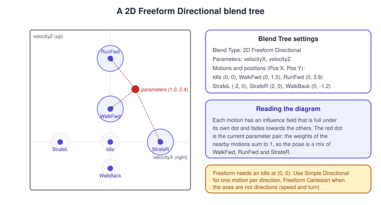
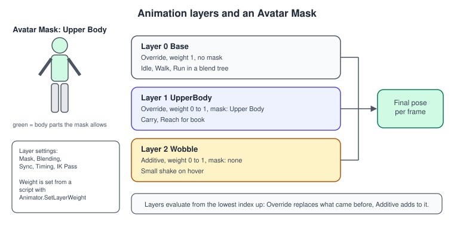
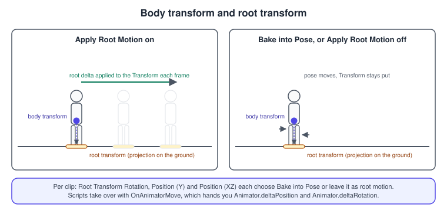

Animation and Mecanim
|
This content was generated with the assistance of AI and should be verified against the official documentation before being relied on in production. |
Animation in a game is the art of changing properties over time and deciding, every frame, which of the authored changes should be playing: a book that slides out of a shelf, a character that blends from idle to walk to run, a hand that reaches for a book. Unity’s main system for this is Mecanim, built from animation clips (the recordings), the Animator Controller (the state machine that picks and blends clips), the Avatar (the bone map that lets humanoid animation be reused on different characters) and the Animator component (which runs it all). This page walks through each part, the scripts that drive them, root motion, inverse kinematics, runtime rigging constraints and the Playables API that sits underneath.
The facts were checked in November 2026. The documented version is Unity 6.3 LTS (6000.3) with the Timeline 1.8 and Animation Rigging 1.4 packages; changes in Unity 6.4 to 6.6 are noted where they matter and summarised near the end. The Mecanim system works on every platform Unity builds for, and the same clips and controllers
run in 2D and 3D scenes. In the Bookshelf, the Book prefab gets a pull-out animation driven by selection, and a humanoid librarian (any rigged character you own; the shared model bookshelf.glb has no skeleton)
walks the aisle using a 2D blend tree and root motion. The game-loop details behind "when does the Animator update" are in Game Loop and Frame Timing, and the MonoBehaviour callbacks in
C# Scripting and the MonoBehaviour Lifecycle.
How the parts fit together
Unity has two animation systems: Mecanim (the recommended one, built on the Animator component, the Animation window and the Animator window) and the Legacy system (the Animation component, kept for old projects). Everything below is Mecanim.

-
An animation clip stores curves of property values over time (position, rotation, scale, a material colour, a humanoid muscle, a sprite) plus optional events. Clips come from an imported model file or are made in the Animation window.
-
An Animator Controller is an asset (
.controller) holding one or more layers of state machines. Each state plays a clip or a blend tree; transitions between states have conditions on parameters. -
An Avatar maps the bones of a humanoid model to Unity’s standard humanoid skeleton. It is created by the model importer and is only needed for humanoid animation.
-
The Animator component on the GameObject references a controller and an avatar, and configures root motion, update timing and culling.
The Animator component
| Property | Meaning |
|---|---|
Controller |
The Animator Controller (or an Animator Override Controller) to run. |
Avatar |
The humanoid avatar, when the model is humanoid. |
Apply Root Motion |
Whether movement and rotation stored in the clips move the GameObject. When a script implements |
Update Mode |
Normal updates with |
Culling Mode |
Always Animate; Cull Update Transforms (skip retargeting, IK and transform writes when no renderer is visible); Cull Completely (no animation at all when invisible). |
The inspector also shows the counts of curves in all clips (position, rotation and scale curves, muscles, generic float curves, sprite curves) and how many are constant, dense or stream: a quick way to spot clips with needless curves.
Source: Unity Manual: Animator component
Animation clips
A clip is a recording. It reaches your project in one of two ways:
-
Imported in a model file (FBX, glTF through a package) made in a tool such as Blender or Maya. The model’s Import Settings Animation tab then lists the clips, lets you split a long take into several clips, set Loop Time and Loop Pose, choose which root-transform channels are baked into the pose, add curves and events, apply an Avatar Mask and choose Anim. Compression (Off, Keyframe Reduction or Optimal).
-
Created in Unity with the Animation window, which records the properties of a GameObject and its children as curves.
Source: Unity Manual: Animation clips
Make the Bookshelf’s pull-out clip
This is the procedure used throughout the page. It makes a Book_PullOut clip that slides a book 12 centimetres towards the viewer, and wires it to a trigger.
-
Select a
Bookinstance in the Hierarchy and open the Animation window (Window > Animation > Animation). -
Select Create, name the clip
Book_PullOutand save it. Unity creates an Animator Controller, adds the clip to it as the default state, adds an Animator component to the book and assigns the controller. -
Select Add Property > Transform > Position, move to 0:20 in the timeline (20 samples at the default 60 samples per second is a third of a second), enable recording and move the book out along its forward axis. Keys appear at 0:00 and 0:20.
-
Open the Animator window (Window > Animation > Animator). Right-click, choose Create State > Empty and name it
Idle; make it the default state. DragBook_PullOutin as a second state. -
In the Parameters tab select + > Trigger and name it
PullOut. Right-clickIdle, choose Make Transition toBook_PullOut, select the arrow, turn Has Exit Time off and add the conditionPullOut. -
Add a script that calls
SetTrigger(the script is in the next section) and play the scene.

The Animation window has a Dopesheet mode (keys on rows) and a Curves mode (tangent editing). The editor menu, playback controls and mode switch were moved above the animation view in Unity 6.5, with a Ripple tool for moving or scaling a group of keys, and Unity 6.6 added a search bar to filter properties.
Events in clips
An animation event calls a method by name at a point in a clip. You add events in the Animation window or, for imported clips, in the Animation tab of the model’s import settings. The method must exist on a script on the same GameObject as the Animator, with zero parameters or one parameter of type float, int,
string, an object reference or AnimationEvent (which also gives the time and the clip that fired it). If the method is missing Unity logs an error, which Unity 6.5 lets you switch off per event with Require Receiver; 6.5 also added a non-allocating AnimationEventInfo struct as a parameter type for
animation-heavy scenes.
using System;
using UnityEngine;
/// <summary>
/// Receives Animation Events fired by the Book's clips. Add an event named "OnPulledOut" at the
/// end of Book_PullOut, and one named "PlaySlide" with a float value at its start.
/// </summary>
[RequireComponent(typeof(AudioSource))]
public class BookAnimationEvents : MonoBehaviour
{
[SerializeField] private AudioClip slideClip;
public event Action PulledOut;
private AudioSource _audio;
private void Awake() => _audio = GetComponent<AudioSource>();
// Animation Event, no parameter.
public void OnPulledOut() => PulledOut?.Invoke();
// Animation Event with the Float field used as the volume.
public void PlaySlide(float volume) => _audio.PlayOneShot(slideClip, volume);
// Animation Event with an AnimationEvent parameter: also gives the time and clip.
public void OnMarker(AnimationEvent e)
{
Debug.Log($"{e.stringParameter} at {e.time:0.00}s in {e.animatorClipInfo.clip.name}");
}
}Animator Controllers and state machines
An Animator Controller is a state machine. Each state plays a clip (or a blend tree, or a nested sub-state machine); the entry node points to the default state; Any State lets you write a transition that can start from every state (a hit reaction); the exit node leaves a sub-state machine. At any moment one state is active, or two during a blend.
Parameters
Parameters are the variables that connect scripts to the state machine. There are four types: Float, Int, Bool and Trigger (a Bool that the controller resets by itself when a transition consumes it). Scripts set them with SetFloat, SetInteger, SetBool, SetTrigger and ResetTrigger,
and read them with the Get counterparts. A parameter can also be driven by a curve in a clip, which is how a sound’s pitch or a hand weight can be animated.
The script below drives the Book. The important details are in the hashed IDs (computed once, instead of hashing a string on every call), ResetTrigger (a trigger that nothing consumed stays set and fires later), and the damped SetFloat overload, which smooths a value over time without code of your own.
using UnityEngine;
/// <summary>
/// Drives the Book's Animator from gameplay code. Parameters: IsHovered (Bool), PullOut and
/// PushBack (Trigger), OpenAmount (Float, 0 to 1).
/// </summary>
[RequireComponent(typeof(Animator))]
public class BookAnimator : MonoBehaviour
{
private static readonly int IsHoveredId = Animator.StringToHash("IsHovered");
private static readonly int PullOutId = Animator.StringToHash("PullOut");
private static readonly int PushBackId = Animator.StringToHash("PushBack");
private static readonly int OpenAmountId = Animator.StringToHash("OpenAmount");
[SerializeField] private float openDampTime = 0.12f;
private Animator _animator;
private float _openTarget;
private void Awake() => _animator = GetComponent<Animator>();
public void SetHovered(bool hovered) => _animator.SetBool(IsHoveredId, hovered);
public void PullOut()
{
_animator.ResetTrigger(PushBackId);
_animator.SetTrigger(PullOutId);
}
public void PushBack()
{
_animator.ResetTrigger(PullOutId);
_animator.SetTrigger(PushBackId);
}
/// <summary>Sets how far the pages are open, from 0 (closed) to 1 (fully open).</summary>
public void SetOpen(float amount01) => _openTarget = Mathf.Clamp01(amount01);
private void Update()
{
// The damped overload eases the parameter towards the target.
_animator.SetFloat(OpenAmountId, _openTarget, openDampTime, Time.deltaTime);
}
}Source: Unity Scripting API: Animator
Transitions
A transition says when to leave a state and how to blend into the next one. Select the arrow in the Animator window to edit it.
| Property | Meaning |
|---|---|
Has Exit Time and Exit Time |
Leave when the source state has played to a normalized time (0.75 is three quarters through). With exit time and no conditions the transition happens by itself; with both, the conditions must be true too. Exit times below 1 are evaluated every loop of a looping clip. |
Fixed Duration, Transition Duration |
The blend length, in seconds when Fixed Duration is on, otherwise a fraction of the source state’s length. |
Transition Offset |
Where in the destination clip the blend starts (0.5 starts halfway). |
Interruption Source and Ordered Interruption |
Which other transitions may interrupt this one while it blends: none, the current state’s transitions, the next state’s, or both in a given order. |
Conditions |
Parameter comparisons. All of them must hold. For a trigger or a bool the condition is the value; for a float or int it has a comparison and a number. |
During a transition the pose is a cross-fade of the two states: with \( t \) running from 0 to 1 over the duration, the result is \( \mathrm{ pose } = ( 1 - t ) \, A + t \, B \), blending each curve of the clips (rotations are blended as quaternions, see Rotations and Quaternions).
Since Unity 6.4 a controller has an Evaluate Entry Transitions On Start option: the state machine can start directly in a non-default state, which removes the one-frame delay that used to show the default state first. The option is on for new controllers and off for existing ones.
Sub-state machines, solo and mute, and target matching
-
Sub-state machines group states into a nested graph with their own entry and exit, to keep large controllers readable.
-
Solo and Mute on a transition let you test a path in the editor without editing conditions.
-
Target matching (
Animator.MatchTarget) adjusts the root so that a body part reaches a position at a given normalized time, for example a hand on a ledge or a foot on a step.
Source: Unity Manual: Target matching
Blend trees
A blend tree is a state that plays several clips at once and mixes them by one or two parameters. The standard use is locomotion: idle, walk and run clips blended by speed, so that the character speeds up smoothly. With weights \( w_{ i } \) computed from the parameters (and \( c_{ i } \) the pose of clip \( i \)):
\[ \mathrm{ pose } = \sum_{ i } w_{ i } \, c_{ i } \qquad \sum_{ i } w_{ i } = 1 \]
The Blend Type chooses how the weights are computed:
-
1D: one parameter, with a threshold per motion. The two neighbouring thresholds around the parameter value share the weight linearly.
-
2D Simple Directional: two parameters, one motion per direction, plus an optional motion at (0, 0).
-
2D Freeform Directional: several motions may point in the same direction (walk forward and run forward); it needs one motion at (0, 0).
-
2D Freeform Cartesian: the axes are unrelated quantities, for example speed and turn rate.
-
Direct: you give each child its own weight parameter; useful for facial shapes or random idle blending.
Source: Unity Manual: 2D Blending

In the Inspector of a blend node, the diagram shows each motion as a dot with an influence field; dragging the red dot in the preview shows the weights live. Compute Positions can fill the positions from the root motion of the clips (speed, velocity, angular speed), so walk and run end up at the speeds the clips really move at. Motions of different length (a walk of 24 frames and a run of 16) need Adjust Time Scale > Homogeneous Speed so their footfalls stay in step during the blend.
Source: Unity Manual: 1D Blending
Drive a locomotion tree with the Input System
The librarian’s controller has a blend tree on velocityX and velocityZ (strafe and forward speed in metres per second). The script reads a 2D move action and a run button from the Input System (see Input System) and damps the parameters.
using UnityEngine;
using UnityEngine.InputSystem;
/// <summary>
/// Feeds the locomotion blend tree. Assign the Move (Vector2) and Run (Button) actions
/// in the Inspector, using InputActionProperty so they can be references to an asset or
/// local actions.
/// </summary>
[RequireComponent(typeof(Animator))]
public class LibrarianLocomotion : MonoBehaviour
{
private static readonly int VelocityXId = Animator.StringToHash("velocityX");
private static readonly int VelocityZId = Animator.StringToHash("velocityZ");
[SerializeField] private InputActionProperty move;
[SerializeField] private InputActionProperty run;
[SerializeField] private float walkSpeed = 1.5f;
[SerializeField] private float runSpeed = 3.8f;
[SerializeField] private float dampTime = 0.1f;
private Animator _animator;
private void Awake() => _animator = GetComponent<Animator>();
private void OnEnable()
{
move.action.Enable();
run.action.Enable();
}
private void OnDisable()
{
move.action.Disable();
run.action.Disable();
}
private void Update()
{
Vector2 input = Vector2.ClampMagnitude(move.action.ReadValue<Vector2>(), 1f);
float speed = run.action.IsPressed() ? runSpeed : walkSpeed;
_animator.SetFloat(VelocityXId, input.x * speed, dampTime, Time.deltaTime);
_animator.SetFloat(VelocityZId, input.y * speed, dampTime, Time.deltaTime);
}
}Layers and masks
Layers let several state machines play at once on different parts of the body. The base layer might hold locomotion, and an upper-body layer might hold carrying a book. Each layer has a Weight, a Blending mode and an optional Avatar Mask:
-
Override replaces the result of the layers below it (within the mask).
-
Additive adds its animation to what is below, so it must animate the same properties.
-
The Avatar Mask selects the body parts or transforms the layer may change. A humanoid mask is a body diagram you click to include or exclude head, arms, legs, hands, feet, root and IK goals; a transform mask is a tree of the hierarchy.
-
Sync makes a layer reuse the structure of another one but with different clips (a wounded walk and run on the same graph); Timing chooses whether the synced clips keep their own length or are stretched to the source’s.
-
IK Pass enables
OnAnimatorIKcallbacks for the layer.

Layers evaluate from the lowest index upwards. A layer with weight zero is skipped, which makes it cheap to leave in place and fade in from a script:
using UnityEngine;
/// <summary>Fades the "UpperBody" layer in and out while the librarian carries a book.</summary>
[RequireComponent(typeof(Animator))]
public class CarryLayerFader : MonoBehaviour
{
[SerializeField] private string layerName = "UpperBody";
[SerializeField] private float fadeSpeed = 5f;
private Animator _animator;
private int _layerIndex;
private float _target;
private void Awake()
{
_animator = GetComponent<Animator>();
_layerIndex = _animator.GetLayerIndex(layerName);
}
public void SetCarrying(bool carrying) => _target = carrying ? 1f : 0f;
private void Update()
{
float weight = _animator.GetLayerWeight(_layerIndex);
weight = Mathf.MoveTowards(weight, _target, fadeSpeed * Time.deltaTime);
_animator.SetLayerWeight(_layerIndex, weight);
}
}Source: Unity Manual: Animation Layers
State Machine Behaviours
A State Machine Behaviour is a script that lives on a state, not on a GameObject. It receives OnStateEnter, OnStateUpdate, OnStateExit, and the move and IK callbacks, so code that belongs to a state (play a sound, reset a trigger, spawn dust) sits next to the state instead of being detected with a polling check. Add one with Add Behaviour in the state’s Inspector.
using UnityEngine;
/// <summary>
/// Plays a sound when the state is entered and clears a trigger when it is left. Attach it
/// to the PullOut state in the Animator window with Add Behaviour.
/// </summary>
public class PlaySoundOnEnter : StateMachineBehaviour
{
[SerializeField] private AudioClip clip;
[SerializeField, Range(0f, 1f)] private float volume = 1f;
[SerializeField] private string triggerToReset = "PullOut";
public override void OnStateEnter(Animator animator, AnimatorStateInfo stateInfo, int layerIndex)
{
if (clip != null)
{
AudioSource.PlayClipAtPoint(clip, animator.transform.position, volume);
}
}
public override void OnStateExit(Animator animator, AnimatorStateInfo stateInfo, int layerIndex)
{
if (!string.IsNullOrEmpty(triggerToReset))
{
animator.ResetTrigger(triggerToReset);
}
}
}Humanoid animation and the Avatar
A humanoid model has the standard set of bones (hips, spine, head, arms, legs, hands, feet) in a known arrangement. When you set the model’s Rig tab to Animation Type: Humanoid, Unity builds an Avatar that maps the model’s bones to that standard skeleton, and converts animation to muscle curves. That gives you two things: retargeting (any humanoid clip plays on any humanoid avatar, whatever the proportions), and body-part masking and IK. Generic is the choice for everything else (animals, props, creatures with unusual rigs): it needs a root node and gives no retargeting.
-
Select the model in the Project window, open the Rig tab and set Animation Type to Humanoid. Select Apply.
-
Select Configure to check the mapping: green bones are mapped, and a bone outside the standard set can go in the optional slots. Fix mistakes, then check the Muscles & Settings tab to limit joint ranges.
-
For other characters with the same skeleton, set Avatar Definition to Copy From Other Avatar.
-
Make sure the model’s clips use the same avatar (Animation tab of the model, or the clip’s own import).
Retargeting is the payoff: a walk cycle authored for one skeleton is reused unchanged on another. The humanoid pose is stored relative to the body’s centre of mass, so proportions do not matter.
Inverse kinematics
Forward kinematics plays the angles in the clip; inverse kinematics (IK) works backwards from a target position to the angles, so a hand lands on a book or a head looks at a lamp. For humanoid characters Mecanim has built-in IK for hands and feet (goals) and for look-at, applied after the clips are evaluated. Turn on IK Pass in the layer settings, then use OnAnimatorIK.
using UnityEngine;
/// <summary>
/// Makes the librarian's head and eyes follow a target, for example the selected book.
/// Needs a humanoid Avatar and "IK Pass" enabled on the Animator layer.
/// </summary>
[RequireComponent(typeof(Animator))]
public class LibrarianLookAt : MonoBehaviour
{
[SerializeField] private Transform lookTarget;
[SerializeField, Range(0f, 1f)] private float weight = 0.8f;
private Animator _animator;
private void Awake() => _animator = GetComponent<Animator>();
// Called by the Animator after the pose of the layer is evaluated.
private void OnAnimatorIK(int layerIndex)
{
if (lookTarget == null)
{
_animator.SetLookAtWeight(0f);
return;
}
// weight, body, head, eyes, clamp
_animator.SetLookAtWeight(weight, 0.2f, 0.8f, 1f, 0.5f);
_animator.SetLookAtPosition(lookTarget.position);
}
}Source: Unity Manual: Inverse Kinematics
Root motion
Humanoid clips store the character’s movement as two things. The body transform is the centre of mass, with its orientation; it is the only world-space curve in a clip, and the muscle curves are relative to it. The root transform is the body transform projected onto the ground plane. Every frame Unity computes the root’s change (Animator.deltaPosition, Animator.deltaRotation) and, when Apply Root Motion is on, applies it to the GameObject.
The result is a character whose feet do not slide, because the speed of the walk is the speed of the clip.
For each clip, the Root Transform Rotation, Root Transform Position (Y) and Root Transform Position (XZ) settings choose whether that channel is baked into pose (it stays in the body transform, so the GameObject does not move for it) or left as root motion. Bake the vertical position and the rotation of straight walks and runs so the character does not drift or turn; leave the XZ position as root motion for movement. Unity shows a green light on a channel when the clip’s start and end match well enough to bake it.

Handling root motion in a script
If something else must own the movement (a CharacterController for collision, a Rigidbody for physics), implement OnAnimatorMove. The Animator then hands the motion to your script instead of applying it, and Apply Root Motion shows "Handled by Script".
using UnityEngine;
/// <summary>
/// Moves the librarian with the root motion of the clips, but through the CharacterController
/// so walls and the floor still stop it. Gravity is added by this script.
/// </summary>
[RequireComponent(typeof(Animator), typeof(CharacterController))]
public class RootMotionToController : MonoBehaviour
{
[SerializeField] private float gravity = -9.81f;
private Animator _animator;
private CharacterController _controller;
private float _verticalSpeed;
private void Awake()
{
_animator = GetComponent<Animator>();
_controller = GetComponent<CharacterController>();
}
// Called once per Animator update, instead of applying root motion automatically.
private void OnAnimatorMove()
{
Vector3 delta = _animator.deltaPosition;
_verticalSpeed = _controller.isGrounded ? -1f : _verticalSpeed + gravity * Time.deltaTime;
delta.y = _verticalSpeed * Time.deltaTime;
_controller.Move(delta);
transform.rotation *= _animator.deltaRotation;
}
}When root motion moves a Rigidbody, set the Animator’s Update Mode to Animate Physics so the clip and the physics step stay in sync (3D Physics).
Animator Override Controllers
An Animator Override Controller reuses a controller’s states, parameters and transitions and replaces its clips. One base controller (Librarian) plus one override per character (Librarian_Tall, Librarian_Ghost) means a change to the logic is made once.
Create one with Assets > Create > Animation > Animator Override Controller, assign the base controller and drop replacement clips next to the originals. At runtime you can build an override and swap clips:
using System.Collections.Generic;
using UnityEngine;
/// <summary>Replaces one clip of the Book's controller with another, at runtime.</summary>
[RequireComponent(typeof(Animator))]
public class BookClipSwapper : MonoBehaviour
{
[SerializeField] private string originalClipName = "Book_PullOut";
[SerializeField] private AnimationClip replacement;
private void Awake()
{
var animator = GetComponent<Animator>();
var overrideController = new AnimatorOverrideController(animator.runtimeAnimatorController);
var pairs = new List<KeyValuePair<AnimationClip, AnimationClip>>(overrideController.overridesCount);
overrideController.GetOverrides(pairs);
for (int i = 0; i < pairs.Count; i++)
{
if (pairs[i].Key.name == originalClipName)
{
pairs[i] = new KeyValuePair<AnimationClip, AnimationClip>(pairs[i].Key, replacement);
}
}
overrideController.ApplyOverrides(pairs);
animator.runtimeAnimatorController = overrideController;
}
}Animation Rigging
The Animation Rigging package (1.4 for Unity 6.3; a core package from Unity 6.6) adds constraints that run after the Animator, in a graph on the character: aim a head at a target, plant a hand on a book, keep a foot on the floor, and blend them in and out with weights. It works on any skeleton, humanoid or not, and is evaluated by the Playables system, so it does not need OnAnimatorIK.
-
Select the character and choose Animation Rigging > Rig Setup from the context menu (or add a Rig Builder component by hand). The Rig Builder lists the rig layers to evaluate.
-
Add a child GameObject with a Rig component, add it to the Rig Builder, and add constraint GameObjects below it (Two Bone IK Constraint, Multi-Aim Constraint, Override Transform, Chain IK, Damped Transform and others).
-
For each constraint set the constrained bones and the source objects (the target).
-
Set the Rig’s Weight between 0 and 1 to blend the constraint on, and each constraint’s own weight for finer control.
using UnityEngine;
using UnityEngine.Animations.Rigging;
/// <summary>Fades an Animation Rigging rig (a two-bone IK reaching for a book) in and out.</summary>
public class ReachRigFader : MonoBehaviour
{
[SerializeField] private Rig rig;
[SerializeField] private float blendSpeed = 4f;
private float _target;
public void SetReaching(bool reaching) => _target = reaching ? 1f : 0f;
private void Update()
{
rig.weight = Mathf.MoveTowards(rig.weight, _target, blendSpeed * Time.deltaTime);
}
}Source: Animation Rigging package manual
The package manual’s rigging workflow covers the setup in detail.
Animating sprites
2D characters use the same Animator and clips, but the animated property is the Sprite of the Sprite Renderer (flip-book animation: drag a set of sprites into the Animation window to create keys), or the bones of a skinned sprite. The 2D Animation package provides the Skinning Editor in the Sprite Editor (bones and weights for a sprite) and Sprite Swap (change parts such as a hat without new skeletons). See 2D Games for sprites and sorting.
Source: 2D Animation package manual
The Playables API
Mecanim is built on the Playables API: a PlayableGraph of nodes (clips, mixers, controllers) that produce data, connected to outputs (an Animator, an AudioSource) that consume it. You can build a graph from code to play a clip without an Animator Controller asset, blend clips by weights you compute, or mix a clip with a controller. Timeline is a Playables client (Timeline and Cutscenes).
using UnityEngine;
using UnityEngine.Animations;
using UnityEngine.Playables;
/// <summary>
/// Blends an idle clip and a wobble clip on the Book without an Animator Controller asset.
/// Change wobbleAmount from 0 to 1 at runtime to fade between them.
/// </summary>
[RequireComponent(typeof(Animator))]
public class BookClipBlender : MonoBehaviour
{
[SerializeField] private AnimationClip idle;
[SerializeField] private AnimationClip wobble;
[Range(0f, 1f)] public float wobbleAmount;
private PlayableGraph _graph;
private AnimationMixerPlayable _mixer;
private void OnEnable()
{
_graph = PlayableGraph.Create("BookClipBlender");
_graph.SetTimeUpdateMode(DirectorUpdateMode.GameTime);
_mixer = AnimationMixerPlayable.Create(_graph, 2);
var output = AnimationPlayableOutput.Create(_graph, "Animation", GetComponent<Animator>());
output.SetSourcePlayable(_mixer);
var idlePlayable = AnimationClipPlayable.Create(_graph, idle);
var wobblePlayable = AnimationClipPlayable.Create(_graph, wobble);
_graph.Connect(idlePlayable, 0, _mixer, 0);
_graph.Connect(wobblePlayable, 0, _mixer, 1);
_graph.Play();
}
private void Update()
{
_mixer.SetInputWeight(0, 1f - wobbleAmount);
_mixer.SetInputWeight(1, wobbleAmount);
}
private void OnDisable()
{
// Graphs are native objects: destroy them or they leak.
if (_graph.IsValid()) _graph.Destroy();
}
}Pooling animated objects
The falling books of the game are pooled (see Project Architecture and Design Patterns). A pooled Animator keeps its parameters and the state it was in. Unity 6.3 added ResetControllerState on Animator and AnimatorControllerPlayable
to put the animator back in its initial state before it returns to the pool.
using UnityEngine;
using UnityEngine.Pool;
/// <summary>A pool of animated Book prefabs whose Animators are reset on release.</summary>
public class AnimatedBookPool : MonoBehaviour
{
[SerializeField] private Animator bookPrefab;
[SerializeField] private int defaultCapacity = 32;
private ObjectPool<Animator> _pool;
private void Awake()
{
_pool = new ObjectPool<Animator>(
createFunc: () => Instantiate(bookPrefab, transform),
actionOnGet: book => book.gameObject.SetActive(true),
actionOnRelease: book =>
{
book.ResetControllerState();
book.gameObject.SetActive(false);
},
actionOnDestroy: book => Destroy(book.gameObject),
defaultCapacity: defaultCapacity);
}
public Animator Get() => _pool.Get();
public void Release(Animator book) => _pool.Release(book);
}Common mistakes
-
Passing strings every frame.
SetFloat("Speed", v)hashes the string each call; computeAnimator.StringToHashonce. -
Triggers that fire later. A trigger that no transition consumed stays set. Call
ResetTriggerwhen the action is cancelled, or clear it in a State Machine Behaviour. -
Transitions that wait for the end of the clip. A new transition has Has Exit Time on by default; for a transition driven by a parameter, turn it off or the response is delayed.
-
Moving an animated object from
Update. The Animator writes the animated properties afterUpdate, so a script that sets the same property usually loses; move it inLateUpdate, animate another object, or use a layer or an Animation Rigging constraint. -
Root motion fighting a CharacterController or Rigidbody. Handle
OnAnimatorMove, or use the Animate Physics update mode. -
An additive layer that does nothing. It must animate the same properties as the layers below.
-
Events without receivers. The method name must exist on a component on the Animator’s GameObject, with a compatible parameter.
-
Humanoid clips on a Generic rig. Humanoid clips are muscle curves, they only work on humanoid avatars.
-
Editing a prefab’s clip in a scene instance and expecting the prefab to change. Clip and controller assets are shared; the component and the overrides on the instance are not.
-
Clips with different lengths in a blend tree. Turn on homogeneous speed or the feet drift apart.
Performance notes
-
An Animator without a controller does no work, and a layer with weight zero is skipped.
-
Playing a single clip with no blending through Mecanim can be slower than the Legacy Animation component, because Mecanim uses temporary blend buffers; use it for blending and state logic, not for one looping clip on a thousand props (consider a custom system, vertex animation in a shader, or the DOTS-based approaches in DOTS: ECS, Jobs and Burst).
-
Scale curves cost more than position and rotation curves; avoid animating scale. Constant curves are optimised away.
-
Use Avatar Masks on humanoid imports to drop IK goals or fingers that you do not use. A Generic rig with a root bone set pays for root motion even when it is not needed; leave the root empty if the clip has none.
-
Pick Anim. Compression at import, use hashes, and set the Culling Mode so that off-screen characters stop animating.
-
Profile with the Animation rows in the Profiler and the Animator window’s live state view (Profiling and Optimization).
What changed recently
| Version | Change |
|---|---|
Unity 6.0 (changes since 2023.2) |
A keyboard shortcut can be bound to making a transition between Animator states. |
Unity 6.3 LTS |
|
Unity 6.4 |
Evaluate Entry Transitions On Start for Animator Controllers. |
Unity 6.5 |
Redesigned Animation window with a Ripple tool; Require Receiver for animation events; the non-allocating |
Unity 6.6 |
Search bar in the Animation window; the Animation Rigging and Timeline packages become core packages. |
Source: Unity Manual: What’s new in Unity 6.5 and 6.6
Where the books are outdated
Unity in Action, 3rd edition (UIA) covers Mecanim for 3D and 2D characters in chapters 6 and 8, and Game Development Patterns with Unity 2021 (GDP) uses the Animator in chapter 5. The concepts (clips, controllers, parameters, blend trees, layers, root motion) are unchanged. What to adjust:
| In the books | In Unity 6 |
|---|---|
|
The Input System (see Input System); the script above reads actions instead. |
|
Works, but hashed IDs are the performance convention; see the scripts above. |
Not covered: Animation Rigging |
A released package (1.4 in Unity 6.3) and a core package from Unity 6.6. |
A controller always enters its default state first |
Evaluate Entry Transitions On Start (Unity 6.4). |
Screenshots of the earlier Animation window layout |
Redesigned in Unity 6.5. |
Not covered: pooled animated objects |
|
Rigidbody-driven characters with |
|